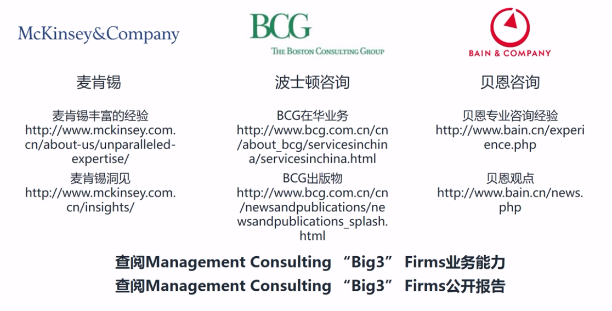

从用户研究到商业分析
一、商业分析概述
A.概述
1.“商业分析”源自管理咨询行业，圈内叫Management Consulting行业
2.三大咨询公司

3.商业分析：就业务发展中的核心问题进行判别、研究、分析和解决
4.核心问题的范围
- 1）重要：问题事关公司/产品的生存与发展
- 2）长期：对于公司/产品来讲是个中或长期的问题
- 3）复杂：问题存在复杂性，比如涉及到人的因素或者信息不对称等
5.判别、研究、分析、解决
- 1）判别：判断和确认问题
- 2）研究：搜集和整理研究资料
- 3）分析：结构化思维判断
- 4）解决：针对问题具体解决
6.完成商业分析后，要进一步推动体系化

B.商业分析在互联网的应用
1.互联网公司组织架构


2.分析类职位在互联网公司的职能定位

3.发展历史
- 1）早期

- 2）00-10年代

- 3）10年后

4.分析类职位在互联网公司的相关岗位

5.商业分析在产品发展中的应用

6.一个好的分析师团队可以驱动公司和业务走向成功，形成研究驱动型的业务发展模式（research-driven）
C.用研为什么要学习商业分析
1.产品人要具有大局观

- 1）对于用户研究员来讲，要对产品负责，就是要对做商业产品的本质—创造商业价值负责
- 2）理解用户只是其一，同时还要兼顾创造商业价值，要懂商业分析
2.平衡商业价值与用户体验

3.产品的商业价值是由产品内生价值与市场外延价值两部分构成的
4.一名成功的用户研究员，需要研究和老师外部市场因素，驱动产品在商业价值和用户体验中取得平衡点
5.产品人和用研要具有商业分析知识和技能，打造一个兼顾用户体验和商业价值的产品
D.互联网商业分析的问题类型和基本流程
1.产品上线之前的阶段

2.产品在通过启动逐渐进入快速发展阶段

3.产品成长曲线接近发展顶峰

4.产品通过增长拐点进入下行区间

5.解决

6.互联网商业分析的典型流程

二、商业分析（上）：信息和数据的获取与分析
A.互联网信息和数据的分类与解释
1.情报和定义的分类

2.市场、公司、产品的结构关系

3.市场情报的构成

4.公司情况的构成

5.产品情报的构成

6.情报维度：按内容划分


7.情报维度：按一手和二手情报划分


B.互联网外部信息和数据的获取（上）
1.外部情况vs内部情报

2.对市场、公司、产品研究中的信息源

3.对行业/市场研究中的信息源及示例

4.对公司研究中的信息源及示例

5.对产品研究中的信息源及示例

C.互联网外部信息和数据的获取（下）
1.信息搜集中的逻辑

2.互联网咨询公司

3.艾瑞咨询

4.咨询公司/市场调研公司

5.波士顿咨询

6.互联网数据服务公司

7.Questmobile

8.iwebchoice

9.互联网媒体/行业垂直媒体

10.36氪

11.互联网甲方公司

12.企鹅智库

13.财务报表

14.上市地

15.周报类型

16.电话会议

17.行业协会

18.主要协会

19.券商报告

20.彭博机

21.万德

22.渐飞研报

23.政府机构

24.CNNIC

25.国家统计局数据库

26.买方投资机构

27.KPCB

28.抓数据
- 1）数据/信息一手数据抓取：结构化数据和文本信息的抓取，将前端页面中的显示文字转化为结构化的数据，可进行分析
- 2）八爪鱼采集器
- 3）Python
- 4）goseeker
D.互联网外部信息和数据的分析
1.互联网产品中的主要三种数据类型

2.核心数据


3.市场数据
- 1）AARRR

- 2）用户获取中的基本逻辑

- 3）CPD、CPS

- 4）CPM

- 5）CPC

- 6）ROI

4.运营数据


5.不同细分市场中的关键数据

E.互联网外部市场情况体系
1.市场情报体系是什么？

2.结构化的信息库

3.结构化的数据库

4.自动化程度较高的情报体系


5.人工化程度较高的情报体系


三、商业分析（中）：行业研究与公司研究
A.辨别正确的研究目标和需求
1.什么是研究目标？

2.面向不同层级的研究目标

3.公司高管解决的问题解析

4.业务管理层解决的问题解析

5.业务执行人员解决的问题解析

6.在研究目标和需求确定中需求注意的问题

7.问题1：没有明白问题是什么？或者理解有误

8.问题2：研究时间和研究深度悖论

9.问题3：独立思考及职业伦理

10.在完成确定研究目的和需求后...需求项目计划书


11.背景及概述

12.内容、方法及预期成果

13.时间框架

14.投入资源

B.研究前：信息与数据的输入
1.国家统计局-年度数据-教育-各项数据

2.广发证券-素质教育行业深度报告

3.达内科技-年报、季报

4.全通教育-年报、季报

5.芥末堆-教育【十三五】规划之职业教育篇

6.36kr

7.QuestMobile

8.iwebchoice

9.199it.com

10.总结

11.注意点1

12.注意点2

C.研究前：结构化的思辩能力
1.什么是结构化思维？

2.原则1：逻辑结构

3.原则2：严谨性

4.原则3：一种思维

5.两种常见的逻辑法：归纳法（Inductive Reasoning）

6.演绎法（Deductive Reasoning）

7.如何学习和训练自身的结构化思维


8.国内外对比逻辑

9.历史对比逻辑

10.没有秘诀，多对Case进行练习

D.进行研究：行业研究（上）
1.行业研究的四个主要问题

2.什么是行业研究？（行业研究的定义）

3.为什么做行业研究？（行业研究的目的）

4.谁是行业研究的需求对象？（行业研究的目标受众）

5.怎么样做行业研究？

6.行业研究逻辑

7.行业研究整体框架

E.进行研究：行业研究（下）
1.行业定义与界定分类


2.行业历史与所处周期


3.宏观环境：PEST分析


4.发展现状


5.产业链/价值链分布


6.市场规模/增长速度


7.市场细分


8.竞争格局


9.商业模式/盈利模式


10.资本市场


11.关键成功因素/行业壁垒

12.行业趋势（短-长）